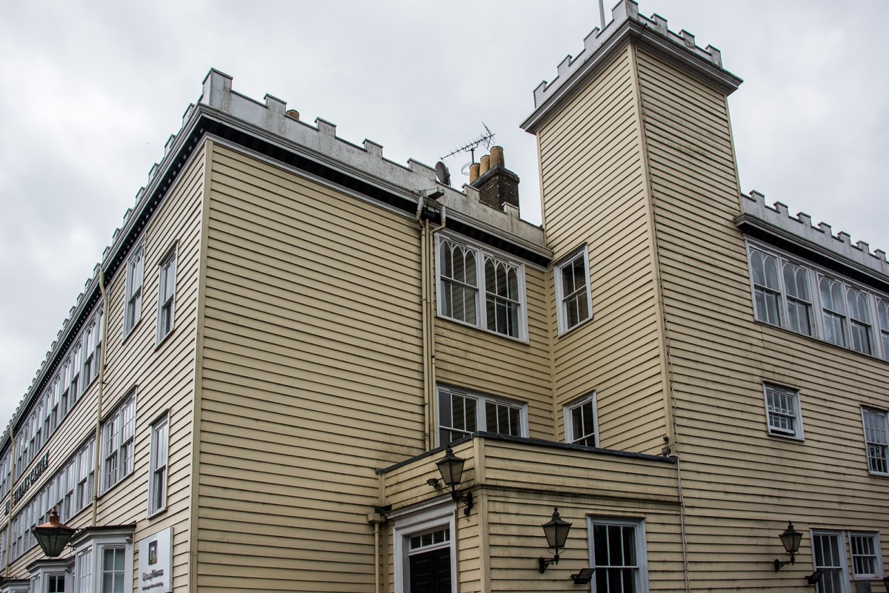
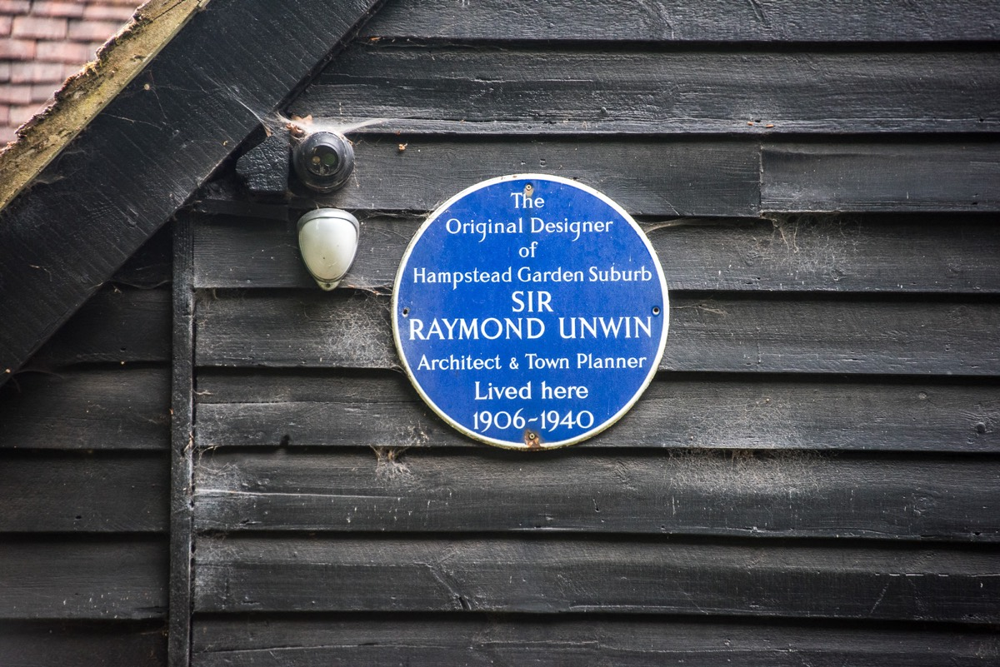
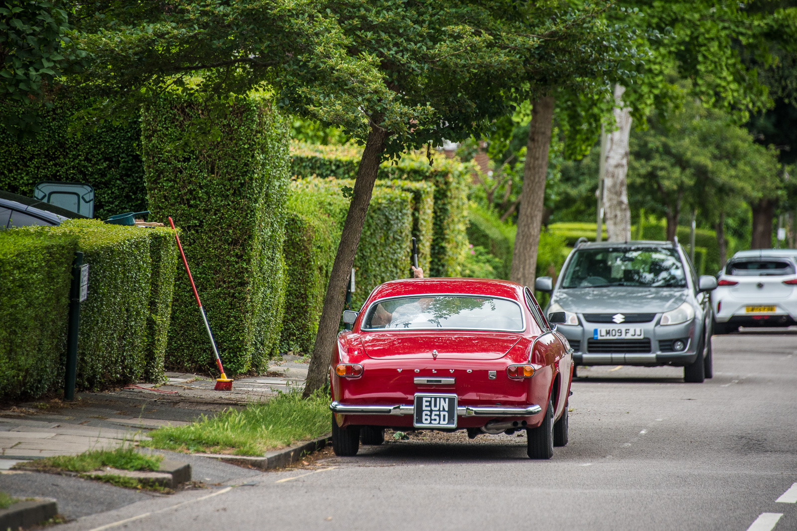
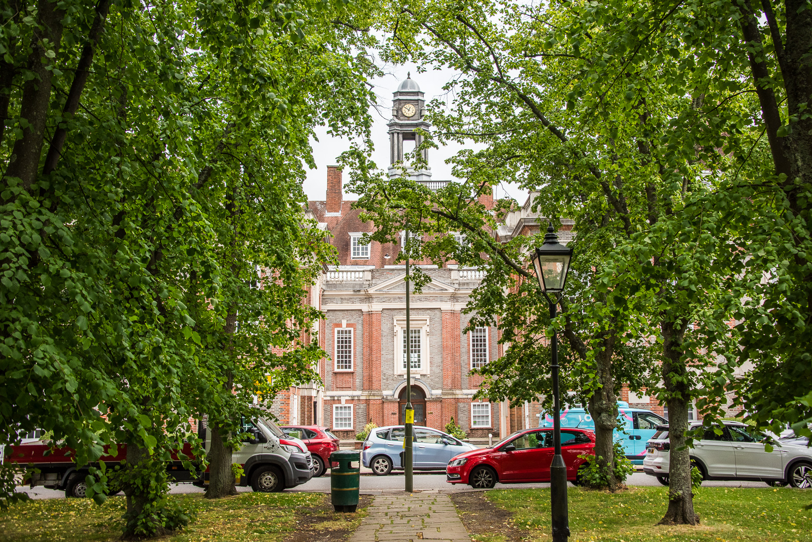
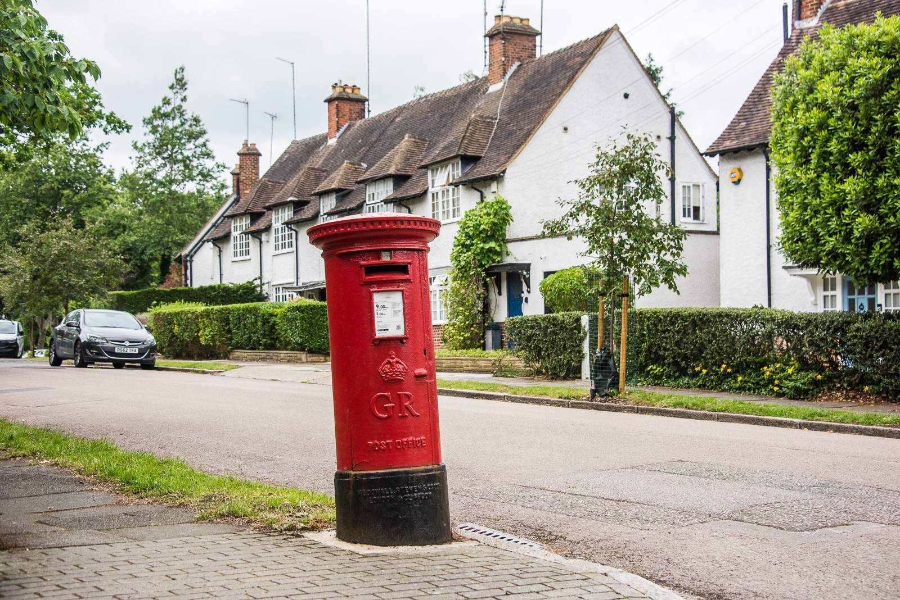
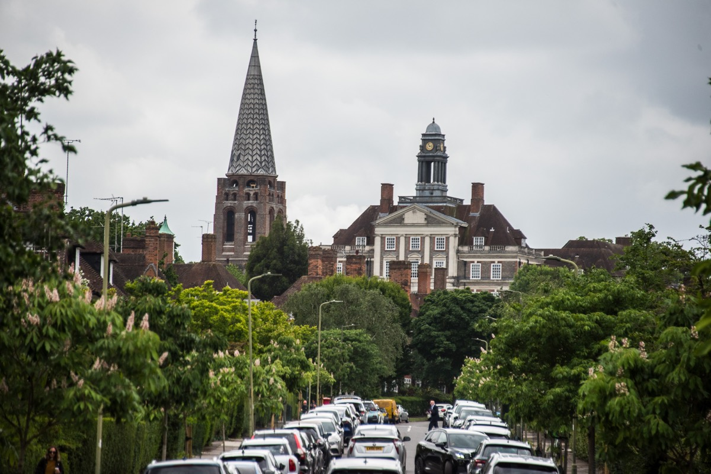
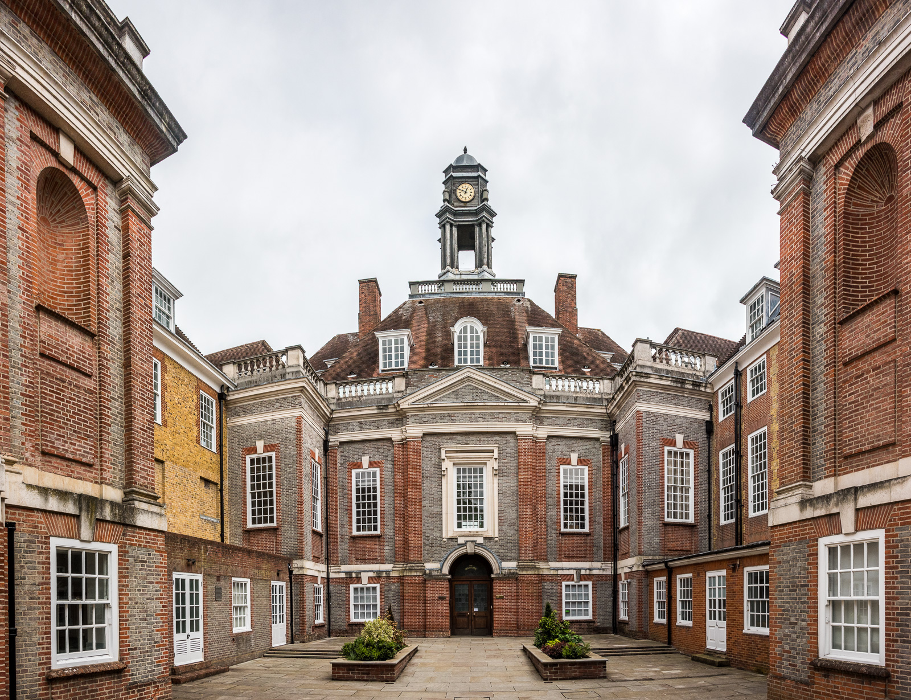
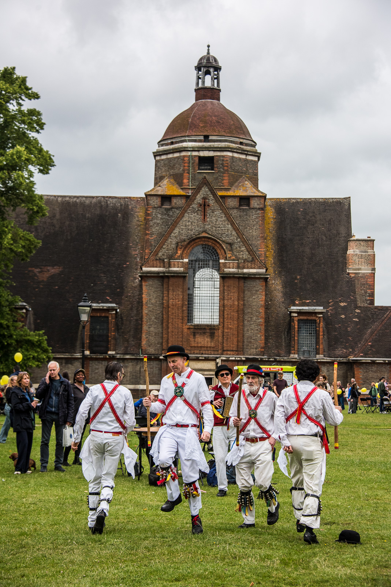
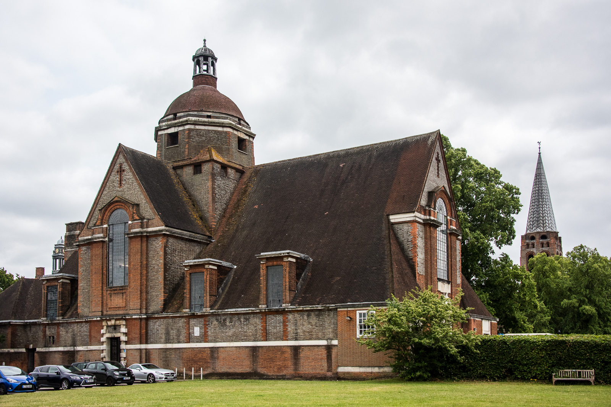

Setting Off:
The Highest Point in London
The guide starts at Whitestone Pond, near the top of Hampstead, with an orientation that also doubles as a small correction to a popular claim: this spot, not Parliament Hill or Highgate, is the highest point within what most people would consider proper London. London's genuinely highest ground sits further out, on the city's northern and southern edges, where real hills take over — this is simply the high point of the built-up centre.
The pond itself began life as a set of horse ponds, filled to water animals hauling loads up the final stretch of hill from Hampstead. A flagpole nearby marks the site of a beacon, once part of a chain that ran, in the guide's words, "all the way to Great Yarmouth" — an early-warning relay for a seaborne invasion that never came, but that towns across the east and south of England once genuinely prepared for.
Before it was a suburb, Hampstead was a health resort. From the 17th century, Londoners came up for the clean air and the local mineral spring water, believed to "rebalance the humours" — a fashionable cure for the wealthy escaping the city's smoke.
North End, further along the ridge, developed the same way but later: first a scatter of farms, then a minor extension of Hampstead's spa trade, offering — as the guide puts it — even better air and better water than Hampstead itself.
Both places stayed largely rural until the 20th century, when speculative building finally arrived in earnest and turned the spa town into a residential suburb of London proper. It's a shift that matters for what follows: almost everything on this walk exists because a small number of people spent two decades trying to stop that same process happening to the fields just north of here.
"I spend a lot of time thinking about how to get someone to learn something, and almost nothing else — so I might assume things you don't know. Please stop me if that's the case."
Jack Straw's Castle
& the Pub That Isn't
The building at the top of North End Way looks, at first glance, like an oddity: a Georgian-fronted structure trying very hard to also be a Gothic manor, with a tiled roof detailing that mimics a much older timber-framed building. The guide's read on it in the moment was close to the mark — it is, in fact, a 1964 building, designed by the architect Raymond Erith after the previous pub on the site was gutted in the Blitz.
A pub has stood here under this name since at least 1713, taking its title from Jack Straw, one of the leaders of the 1381 Peasants' Revolt, who was said to have used the heath as a mustering point — or a hiding place, depending which version survives — before his capture and execution.
The guide is candid about the story's shakiness: "whether that's true or not, it's probably not true. It's such a good name." Historical accounts of the pub agree there's no solid documentary link between Straw and this particular hilltop — the connection appears to be exactly the kind of good story a landlord would keep rather than correct.
The pub itself closed in 2002 and the building — now flats and a gym, though Grade II listed and largely preserved — was badly damaged by a landmine on 19 March 1941, the same raid that damaged its neighbour, Heath House. It stood as a ruin, its walls progressively demolished for safety, until Erith's rebuild finally replaced it in 1964. Speaking at Erith's memorial service a decade later, the poet laureate John Betjeman called the result "true Middlesex" — a phrase historians of the building still reach for. Past visitors, by tradition rather than firm record, are said to have included Charles Dickens and Karl Marx.
Heath House &
the Abolitionists Next Door
Behind Jack Straw's Castle sits Heath House — the same building damaged in the 1941 raid, and, at the time, home to a member of the House of Lords. Its more lasting claim rests earlier, with the Quaker banker Samuel Hoare, who moved his family here in 1790.
Hoare was a well-connected figure in London's Quaker banking circles and, more significantly, a committed campaigner against the slave trade — one of the founding members of the Society for the Abolition of the Slave Trade, and part of the network of Quaker and evangelical reformers, including William Wilberforce, who pushed the cause through Parliament.
Heath House became a byword for open-handed entertaining; the poet George Crabbe was a regular guest, and Samuel Hoare's circle overlapped with the wider Gurney family of Norfolk Quakers — the same family that produced the prison reformer Elizabeth Fry. The precise nature of any personal connection between Fry and this particular house is guide tradition rather than a documented visit, and worth treating as such rather than a confirmed fact.
What's well established is the type of household this was: wealthy, Quaker, reform-minded, and — as the walk will keep returning to — the direct social ancestor of the philanthropic energy that later built the suburb further along the ridge.
North End: The Pumps,
the Pubs & Wyldes
North End in the 1600s was little more than a few cottages. It opened up as a fashionable minor resort after the mid-18th century, drawing its own wave of Londoners after clean air and spring water. One of its earliest recorded residents was William Pitt the Elder, who lived from around 1767 in a house — now demolished — known as North End House.
The village pump, the Bull and Bush — later immortalised in the music-hall song "Down at the Old Bull and Bush" — has stood on this spot since at least 1721, though the current building dates to a 1924 rebuild; the central section of older brickwork on either side is what survives of the earlier structure. Its neighbouring stables once served travellers breaking their journey out of London.
The row of three-storey houses on the left as the walk continues are early 18th century, though bomb-damaged and rebuilt, along with the terrace beside them, in the 1950s. Further along stands Wildwood Lodge, a mid-Victorian house associated by guide tradition with a dentist to Queen Victoria — a detail worth flagging as tour lore rather than a documented royal appointment pending a closer source check.
Several buildings the guide points to along North End no longer exist. Pitt's own house was demolished after his death. Pennyfathers, later used as a wartime hospital, fell into ruin and was eventually demolished and rebuilt under the same name. Hollybush, a weatherboarded cottage once lived in by the artist and engraver John Linnell, was pulled down before the First World War.
The pattern across North End is consistent: a resort-era building, damaged or simply left to decay, quietly replaced — sometimes on the same footprint, sometimes not, and not always with the historical fidelity the current buildings' appearance might suggest.
Old Wyldes &
the Trust's Own Drawing Office
Old Wyldes, a timber-framed farmhouse extended in the 18th century, is the historical hinge of this whole walk. It has been a farmhouse since at least the mid-1500s; by the early 19th century its tenant farmer had moved out and converted the barn, letting the house to a string of artists — John Linnell among them, with William Blake recorded as a visitor. Charles Dickens is said to have stayed here while writing Oliver Twist, and the novel's escape scene, in which Bill Sikes flees London after murdering Nancy and hides beneath a hedge, is set on ground close to this spot.

In 1906, the architect Raymond Unwin — appointed that year as the Hampstead Garden Suburb Trust's architect and surveyor — took up residence at Old Wyldes and converted its barn into the trust's own drawing office. Unwin stayed on living there even after 1914, when he handed day-to-day design work at the suburb to his successor, a man named Sutcliffe, who ran the drawing office from the same barn.
The route this walk follows — from the top of North End, down through the fields, to the entrance of the suburb below — is, by the guide's account, close to the route an architect or a prospective house-buyer would have walked from the nearest station to reach that same drawing office in the early 1900s.
"This is what you would have seen when you were coming in — this is probably what you would have been thinking about when you were walking towards the drawing office."
Saving the
Heath Extension
The fields north of Old Wyldes belonged, at the turn of the 20th century, to Eton College — landlords, by this point, to a scatter of tenant farms across the area, including Wyldes itself. In 1900, plans resurfaced to extend the Underground from Charing Cross up through Hampstead to Golders Green, work that finally opened in 1907. Easy rail access to open fields meant one thing to speculative builders: an obvious site for exactly the kind of dense Victorian terracing that had already swallowed suburbs like Willesden.

The campaign to buy that land was led by Henrietta Barnett, a wealthy philanthropist who, with her husband Canon Samuel Barnett, had already spent years founding charitable and educational institutions in the East End, including Toynbee Hall and the Whitechapel Art Gallery. She and her husband kept a country retreat overlooking the heath, and the threat to its view — and to the fields beyond — was what first drew her into local campaigning.
Eton College's agent initially refused to negotiate the sale with Barnett at all, on the grounds — reported in her own later account of the campaign, and repeated by the guide on the walk — that the trustees would be unlikely to sign over such a valuable estate to a woman: "if only you would get a few men behind you it would be all right."
Barnett's response was to assemble a steering group of eight supporters — two earls, two lawyers, two free churchmen, a bishop, and herself — to carry the negotiation forward. It worked: by 1906 a deal had been brokered between Eton College, the Heath Extension Council, the London County Council and the newly formed Hampstead Garden Suburb Trust, and the 80-acre purchase completed the following year.
The wider ambition grew directly out of that campaign. Once it became clear that protecting the view alone wouldn't be enough, Barnett and her trust set about buying the remainder of the surrounding Wyldes estate — several hundred further acres — to build, on her own terms, the suburb that would otherwise have been built by someone else.
The Great Wall &
Sunshine Corner
Walking down through the Heath Extension today gives a reasonably faithful impression of what this stretch of Middlesex looked like before London reached it: rolling grassland, old hedgerows still tracing the boundaries of what were once seven or eight separate fields, and a scatter of ponds — several dug between 1907 and 1915, once the land had passed into public ownership. What's missing, as the guide notes, is simply the livestock and the working farm buildings that would once have filled it.

"It's kind of another fish or fowl. The Heath is a lot more consciously wild — this has got football pitches on it. But you can still see the grain of the old fields, even if it's grown quite wild since."
The Extension's northern edge is marked by the Great Wall — a boundary built by Unwin to divide the rural fields from the suburb's built centre on the hill above, punctuated partway along by a raised terrace known as Sunshine Corner. The wall's design was drawn, by the guide's account, from Unwin's admiration for walled German hill towns, in particular Rothenburg ob der Tauber — places with a hard edge between inside and outside, and no sprawl in between.
The Great Wall was meant to run further than it does. Construction had reached only part of its planned length by 1914, and work never resumed after the First World War — the wall today simply stops, rather than completing the circuit Unwin originally intended.
Building the
Suburb
Hampstead Garden Suburb was, from its outset, planned as something more consciously ideological than an ordinary housing estate. Barnett wanted a mixed community — grand houses and modest cottages within sight of each other — built on the belief, common to the period, that proximity to social betters would improve the lives of the less well-off. Whether that particular theory ever held up is, as the guide concedes on the walk, a fair question; it's not one many planners would defend outright today, even if mixed-tenure development remains a live idea for different reasons.


Unwin and his partner Barry Parker deliberately avoided the yellow London stock brick that dominated most contemporary suburban building, choosing instead reddish, purplish local brick and clay tile roofing to match the older vernacular buildings already scattered across the area — Old Wyldes among them — rather than the cheaper Welsh slate then standard on Victorian terraces.
Existing hedgerows and field boundaries were kept wherever possible and used to define new street lines, and mature trees were retained within the new layout rather than cleared — an approach meant to give the suburb, from its first year, a sense of having always been there.
Larger houses cluster around the heath-facing side of the suburb; several, on the walk's telling, were built with sleeping balconies — a projecting, open-air platform off the front room, reflecting the same early-20th-century enthusiasm for fresh air that had drawn people to Hampstead as a spa town two centuries earlier, now recast as a public-health principle for suburban living.
Central Square
& What Became of It
The walk ends at Central Square, the suburb's highest and most formal point — deliberately sited, as churches so often are, to be visible from a distance. Two churches stand here: St Jude's, Anglican, with its tall lead spire, and the Free Church opposite. Both, along with the Institute building between them, were designed by Edwin Lutyens, who served as consulting architect to the suburb from its earliest planning stages, working alongside Unwin and Parker's overall layout.



Barnett's original stipulations for the suburb were strict, and several still shape it: no pubs, no shops on residential streets, no cinemas — restrictions maintained today partly by the Hampstead Garden Suburb Trust and partly by conservation-area protections administered by the London Borough of Barnet. Ownership of individual houses shifted from the trust to leaseholders following the Leasehold Reform Act of 1967, with a residents' management scheme set up to continue the trust's role as architectural gatekeeper — the same design-control function the guide's own job with the trust still performs.
"House prices here are much higher than they'd be outside the suburb, because it's so well maintained, and so nice. Even the small cottages cost more than a similar-sized house somewhere else."
— The guide
It's a fairly direct throughline from the argument Henrietta Barnett made in 1900 to the market the suburb commands today: the fields she fought to keep out of speculative builders' hands became, instead, one of London's most tightly controlled and most expensive pieces of suburban real estate — arguably proving her original instinct about quality and permanence right, even as the classless community she envisaged became something considerably more exclusive than she likely intended.